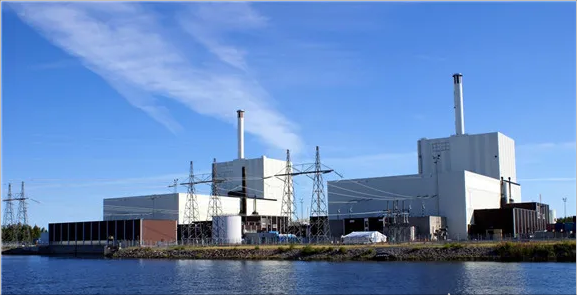
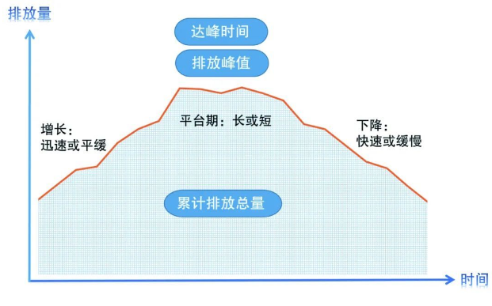
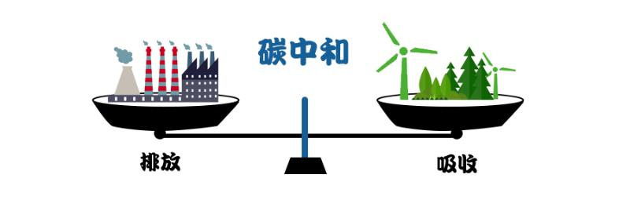
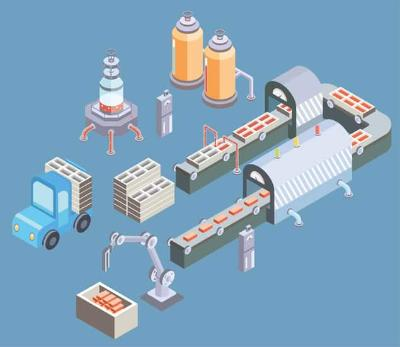
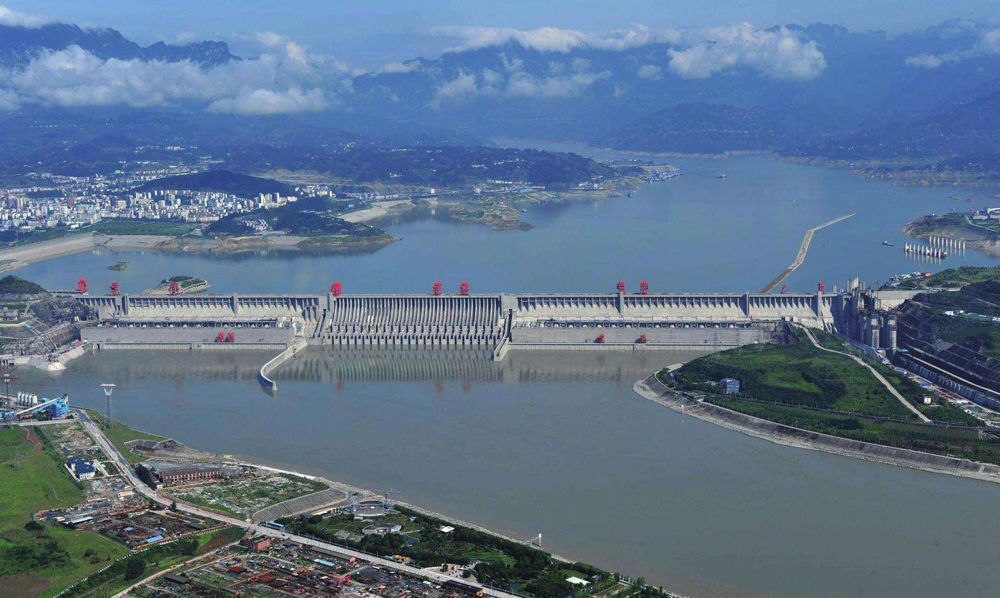
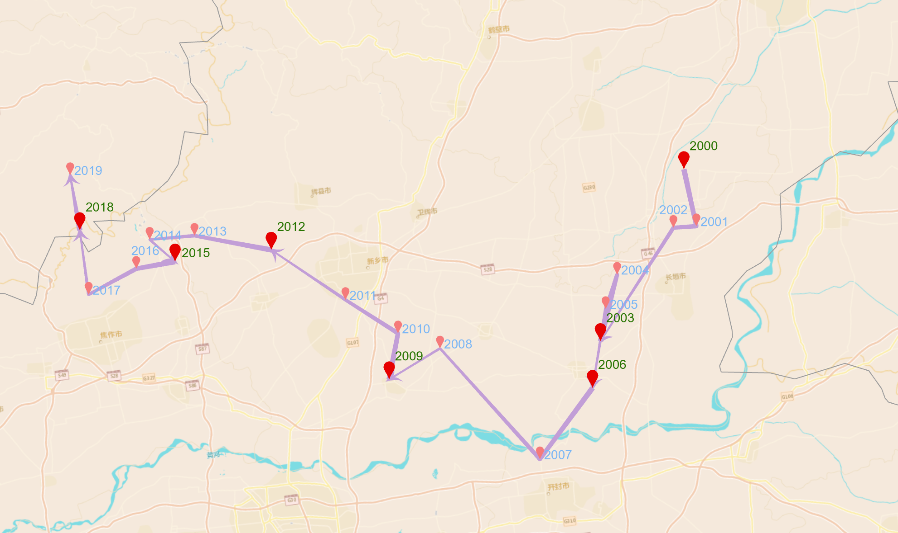

碳排背后隐藏的欧美国家的经济骗局
除了环境因素
在经济角度上
欧美国家为何在20世纪末强烈号召并提出碳排放权？
一切还要从历史上的石油美元说起......
114213 周远卓
第一章：碳排放权的由来
早在19世纪末20世纪初，便有英国蒸汽工程师卡伦德计算并提出了全球会逐年变暖的环境问题，但为何碳排放权、低碳行动并未在当时就被提出，在全球环境的大背景下， 是什么样的原因使得碳排放问题成为了现今世界的焦点？
全球变暖趋势|不同国际机构数据集给出的1850-2020年全球平均地表温度变化
当今世界，在“双碳”理念中，国家的发展不再以牺牲环境为代价，而是力求实现经济增长与碳减排的双赢。这一理念的崛起带来了前所未有的探索与机遇。可再生能源、清洁技术、绿色基建、可持续发展的政策措施等各个领域迸发出强大的创造力。 本故事将带您深入探讨双碳背后的大国崛起。让我们开启这场关于双碳背后大国崛起的探索之旅，携手迈向碳中和的美好明天~
【碳排放权】
碳排放权，指的是权利主体为了生存和发展的需要，由自然或法律所赋予的 向大气排放温室气体的权利, 实质上是一定数量的 气候环境资源使用权。
碳排背后隐藏的欧美国家的经济骗局
除了环境因素
在经济角度上
欧美国家为何在20世纪末强烈号召并提出碳排放权？
一切还要从历史上的石油美元说起......
【石油美元霸权】
布雷顿森林体系瓦解后， 美国又创造了新的绑定物这一关键环节。伴随着工业经济发展对 石油需求 的急剧增长，石油全面取代煤炭，成为最主要的能源消费品，成为人类生产和生活中具有 不可替代性的必需品。 石油在 能源体系 中的地位让它成为 黄金的最佳代替物。
石油美元霸权
为了让美元与石油成功绑定，美国秘密与沙特接触，达成“不可动摇的协议”。 美国为沙特提供军事保障，确保其在中东的地位， 交换条件则是 美元作为沙特出口石油唯一的定价货币。 紧接着，在沙特的配合下，美国又搞定了其他的OPEC成员国，最终美元成为石油的唯一计价和结算货币。
美元宣布与石油挂钩
【石油美元“霸权”体现在哪？】
石油美元霸权
石油美元的霸权是显而易见的，因为 任何国家要发展都离不开石油，买石油就必须要用美元， 所以每个国家都必须储备大量的美元。由此，美国就可以 用“纸”在全世界换取实物财富, 因此，“大漂亮”利用这种“霸权”在每次全球疫情、次贷危机、经济下滑的时候就肆无忌惮的开始印钞，然后在世界上疯狂买买买，很快经济就复苏了，而其他国家吸收了大量的美元，通货膨胀很严重。世界上很多国家对此都怨声载道。
欧洲经济战略家会议
欧洲国家怎甘心一直被这样“割韭菜”，一群经济战略家们便出来开会，想要 改变石油美元的“规则”, 实质上，最根本的是 找到代替石油的能源。 当时的欧洲本身能源缺乏， 很早就开始了新能源技术的研究......
※ 新能源产业
新能源产业是指那些从事新能源研发、生产、销售和投资活动，具有一定规模的产业集群，最近20年获得了快速的发展，具有清洁性、可持续性的特点。欧盟境内的新能源产业主要指 太阳能光伏、陆海风能、生物质能 的开发和利用，潮汐能、地热能和氢能也属于新能源范畴。
※ 欧洲国家新能源产业的发展
右图是欧洲国家在1996年新能源消耗量/总能源消耗量的分级统计图 可以看出，在上个世纪末，在石油作为全球主导能源的时候，欧洲便开始有计划的大力发展新能源。 
瑞典核电站
瑞典 于 1970年 成立了 国家能源局， 致力于推动可再生能源的开发和应用。类似地， 德国 在 1970年代初 启动了 太阳能和风能的研究项目。 然而，1990年代至2000年代，欧洲国家进一步加大了对新能源研究的投入，并采取了一系列政策和法规来促进可再生能源的发展。 欧洲联盟 在 2000年 制定了旨在降低温室气体排放并提高可再生能源比例的 “2020能源与气候变化包”。 德国 在同一时期通过了 《可再生能源法》， 鼓励使用可再生能源并提供优惠的电价回购政策。
例如：德国——早在20世纪70年代便开始了新能源的能源转型
然而，欧洲国家想要摆脱石油美元的控制，
除了自身buff:新能源优势之外，还需要满足三个条件：
一是在道德的制高点上站得住脚；
二是制约使用美元；
三是不能让美国看出摆脱石油美元的真实目的；
终于，在一个加班加点的晚上，借助全球气候变暖的大背景，一个打着保护地球环境的 碳排放体系 就诞生了！
而这一体系还需要当时的美国“大哥”同意，为了掩盖真正目的，“聪明”的欧洲国家以 通过碳排放权限制发展中国家的发展 为由成功劝说“大漂亮”，开始在全球号召，实行碳排放权的分配，并召开会议，签订《京都议定书》、《巴黎协定》等合约......
欧美国家制定碳排放权“新规则”
【双碳目标的正式提出】
中国在 第75届联合国大会 上正式提出 “2030年实现碳达峰、2060年实现碳中和” 的目标。也简称为“双碳目标”
一、什么是“碳达峰”
碳达峰就是指 碳排放量达峰，即二氧化碳排放总量在某一个时期达到历史最高值，之后逐步降低。 其目标为在确定的年份实现碳排放量达到峰值，形成碳排放量由上涨转向下降的 拐点。 碳达峰是碳中和实现的前提，碳达峰的时间和峰值高低会直接影响碳中和目标实现的难易程度，其机理主要是： 控制化石能源消费总量、控制煤炭发电与终端能源消费、推动能源清洁化与高效化发展。 
二、什么是“碳中和”
碳中和即为 二氧化碳净零排放 ,指的是 人类活动直接或间接产生的二氧化碳排放量与二氧化碳吸收量在一定时期内达到平衡。 其中人类活动排放的二氧化碳包括化石燃料燃烧、工业过程、农业及土地利用活动排放等，人类活动吸收的二氧化碳包括植树造林增加碳吸收、通过碳汇技术进行碳捕集等。 
对于正处于高速发展的中国来说，
双碳目标的压力可想而知，但中国仍然在人均碳排放远低于发达国家2-3倍的情况下，
主动向世界主动承诺我们自己的“双碳目标”！
原因何在......
【中国为何要承诺双碳目标？】
产业升级
1.过去的200年里，人类向大气层排放了数万亿吨二氧化碳，如同给地球穿了件“棉袄”， 温室效应、臭氧层空洞、全球生态平衡遭到严重破坏 等一系列问题接踵而至。这一环境大背景下，中国作为人口大国，面对环境恶化，我们需要拿出大国态度，正视并为之做出努力
经济发展
2.减少碳排放，增加碳汇不仅仅是环境保护的要求， 更是中国的发展机遇，是 中国能源转型、产业转型、经济发展、打造宜居智慧城市 的机会。
※ 双碳背后的能源外交
※ 2008年，《中石油与哈萨克斯坦签署天然气及天然气管道领域合作协议》；
※ 2010年1月1日，拥有19亿人口、GDP接近6万亿美元、发展中国家间最大的自由贸易区——中国-东盟自由贸易区正式建立。
※ 2008年，中国发改委与卡塔尔能源工业部《关于加强能源合作的谅解备忘录》；
※ 2008年，中国与美国签署了《中美能源环境十年合作框架下的绿色合作伙伴计划框架》；
※ 2012年，中国与荷兰签署了《能源合作谅解备忘录》。
※ 2013年，中国与英国签署了《英国贸易投资总署和中国国家能源局关于英中海上风电合作的谅解备忘录》。
※ 2014年，中俄两国政府《中俄东线天然气合作项目备忘录》、中国石油天然气集团公司和俄罗斯天然气工业股份公司《中俄东线供气购销合同》
※ 低碳产业：可持续发展的关键未来
矿物制造业 作为能源消耗的主要产业，在全球经济发展中发挥着重要的作用。然而，随着人们对环境问题的关注不断增加， 传统的高碳排放模式已经显示出了其不可持续性。 为了应对气候变化和资源枯竭的挑战， 产业转型和低碳发展已成为当今世界的迫切任务。 
矿物制造业——新能源转型示意图
不同产业的能源消耗占比
※ 中国水电站
水力发电利用蕴藏于水体中的位能进行发电，也是一种重要的清洁能源，并且相比其他可再生能源，
水力发电的利用率最高。
中国水力资源丰富且集中，适宜发展水力发电。在1912年，中国第一座水电站——
石龙坝水电站
在云南昆明建成运行；世界最大的水力工程——三峡工程于1994年开始动工，历时12年完全建成。百年来，中国水力发电中国的水力发电逐步达到世界领先水平。
目前，中国已建成著名水电站有：
三峡水电站
、溪洛渡水电站、白鹤滩水电站、乌东德水电站、向家坝水电站、龙滩水电站、糯扎渡水电站、锦屏二级水电站、小湾水电站、拉西瓦水电站等。

三峡水电站
中国部分水电站
中国正像一位坚定的行者，
在追求可持续发展的道路上，
中国正在全面提速减排发展，
迈着跨越崇山峻岭的步履，
坚定而有力......
※ 2019年中国碳排放分省总量
可以看出，
山东、山西、河北
是碳排放大省，收齐自然矿产条件的影响，其消耗的能源仍多是石油、煤炭等不可再生资源。
未来，对于碳排放大省，应重点关注其：
1.绿色能源革命
2. 产业转型升级
3. 低碳城市建设
等.......
助力中国如期实现“碳达峰、碳中和”的伟大目标
数据参考自ODIAC数据库计算的碳排放清单
※ 2000-2019年中国碳排放中心点位变化
可以看出
中国碳排放中心位于中部
郑州市
附近
在这近20年的是时间内（即世界上提出碳排放权到中国承诺双碳目标之前），
我国的碳排放中心位点整体由东向西迁移，
前期还呈现出向南迁移的趋势，
迁移路线大致呈现反“√”的样式

2000-2019碳排放点位变化示意图
【未来展望】
一带一路绿色发展规划蓝图
在未来，
向西我国将共建
“一带一路共同体”
，
向东促进
中日韩碳市场融合
我国与沿线国家加强可再生能源的项目合作、装备制造、工程服务等方面的合作，以及相应的治理机制，合作平台的构建。共同构建一带一路绿色发展的新蓝图。
今时不同往日，
中国在控制碳排放的同时，
走在了大国崛起的路上，“双碳”的成就仍在书写......
减碳增汇的故事未完待续......